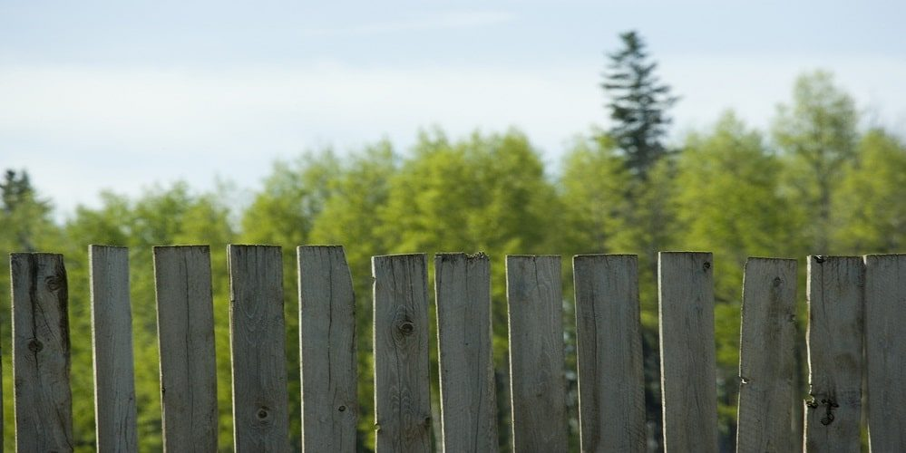
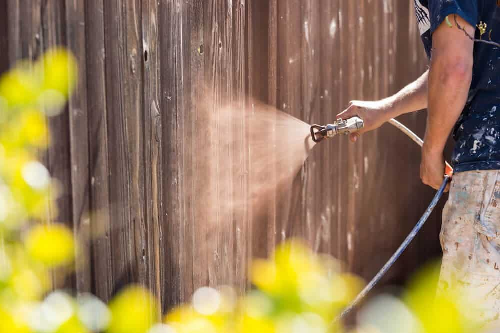

In This Guide
- Cedar and pressure-treated pine both commonly last around 15 to 20 years or more, and cedar often has a slight edge on board life.
- Ground contact, standing water, and skipped upkeep shorten the life of either wood far more than the species does.
- Posts are usually the weak spot, so a ground-contact rating and good drainage matter more than the label on the boards.
- Cleaning, sealing, and quick repairs can add years to a fence, no matter which wood you choose.
Ask ten people whether pressure-treated wood outlasts cedar and you will hear ten confident answers. The honest one is that it depends on where the wood sits, how wet it stays, and how it is looked after. Species is only part of the story.
This is a lifespan-first look at the question from Big Easy Fence. It covers what wears out a wood fence in a humid climate like ours, the rough ranges each wood tends to reach, and the habits that push a fence toward the long end.
What Actually Decides How Long a Fence Lasts
Four forces do most of the damage. Whichever wood you choose, the fence lasts as long as it can hold out against them.
Moisture and Ground Contact
Wood rots when it stays wet and cannot dry out. Posts set in damp soil, boards resting on the ground, and spots where water pools are the usual starting points. In New Orleans, with heavy rain and high humidity most of the year, moisture is the biggest threat.
Sun and Heat
Ultraviolet light breaks down the surface of unfinished wood. Boards turn silver-gray, dry out, and start to check and split. That color change alone is cosmetic, but the cracks it leads to let water in.
Insects and Fungus
Termites and wood-rotting fungus both thrive in our warm, wet conditions. Treated lumber and cedar heartwood each resist them in different ways, though neither is immune.
Upkeep
A cleaned, sealed fence sheds water. A neglected one soaks it up. Two identical fences can end up years apart in age purely because of how they were cared for.
How Long Each Wood Typically Lasts
These are rough planning ranges, not guarantees. Wet conditions, poor drainage, and no maintenance can pull any of them toward the short end.
| Wood | Typical Lifespan | What Usually Fails First |
|---|---|---|
| Pressure-Treated Pine | About 15 to 20 years | Boards warp, split, and gray, and posts weaken at the ground line if they are not rated for soil contact |
| Cedar | About 15 to 25 years | Soft boards dent and split near fasteners, and untreated posts rot where they meet the soil |
| Untreated Pine | About 5 to 10 years | Rot and insect damage, especially anywhere it touches soil |

Why Treatment Adds Years
Pressure treatment forces preservatives deep into the wood, which protects it against rot and insects far better than a surface coating can. That is why treated pine has been the workhorse fence wood in this region for so long. The protection has limits. Every cut end and drilled hole exposes untreated wood inside the board, and treated lumber can still absorb water, warp, and split as it dries. Brushing a preservative made for cut ends onto fresh cuts helps close that gap.
Cedar works differently. Its heartwood carries natural oils and compounds that resist decay and insects, which is why it holds up without chemical treatment. Sapwood, the pale outer layer, resists far less. Cedar is also softer than pine, so it dents and splits more easily and needs the right fasteners to avoid cracking and staining.
The Weak Spot Is Usually the Posts
Boards spend their lives above ground, where they can dry after a storm. Posts sit in wet soil around the clock. That is why fences often lose posts before boards, whichever wood was used.
For posts, look for lumber rated for ground contact, since lumber rated only for above-ground use carries less preservative. Some builders pair cedar boards with ground-contact treated posts for exactly this reason. Concrete that slopes water away from the post and gravel or soil that drains well around it help too, since standing water at the base is what starts the rot.
How to Stretch Either One
The habits that help are the same for both woods, and none of them are complicated.

- Keep boards off the soil. A small gap between the bottom board and the ground lets the fence dry.
- Seal or stain on a schedule. New treated lumber should dry out first, and finishes need renewing every few years as they wear.
- Wash off mildew and grime. A mild soap and a soft brush are enough for most fences.
- Check fasteners and hardware. Loose or rusted fasteners let boards shift and move water into joints.
- Redirect water. Aim sprinklers away from the fence and keep plants trimmed so air can move through.
- Replace bad boards early. Use the same type of lumber so the repair matches the rest of the fence.
For a deeper look at moisture control, our guide on how to prevent rot in wooden fences covers drainage and finishes in more detail.
So Which One Lasts Longer?
It is closer than most articles admit. Cedar often has a slight edge on board life, and treated pine has the advantage of being rated for soil contact and costing less. A well-kept fence in either wood can reach 15 to 20 years or more, and a neglected one in either wood can fail years sooner.
If you are choosing between them, weigh the ground conditions, your budget, and how much upkeep you will realistically do. And if posts have started to lean or boards feel soft, a fence repair visit is usually cheaper than waiting for a full replacement.
Want Help Making Your Wood Fence Last?
Tell us about the fence you have or the one you are planning, and we will explain which wood and finish suit your yard.